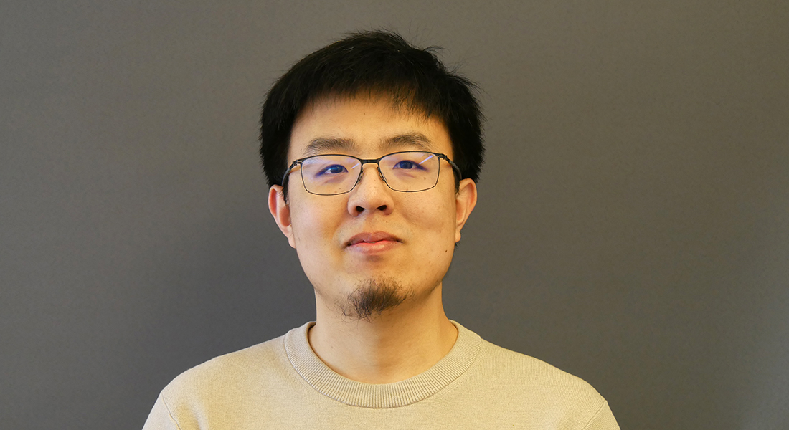

A Simple Quantum Linear-System Solver via Dissipation
arXiv:2609.12284 (2026)
QMATH · University of Copenhagen
Researcher in quantum computing
and quantum information.

My name is Zhongxia Shang (or Zhong-Xia Shang used in publications). I am currently a postdoctoral researcher at QMATH at the University of Copenhagen hosted by Prof. Daniel Stilck França. Previously, I was an HKIQST postdoctoral fellow affiliated with the University of Hong Kong (HKU). My hosts were Prof. Wang Yao and Prof. Qi Zhao. I obtained my Ph.D. degree in Physics at University of Science and Technology of China (USTC) (2024). My advisor was Prof. Chao-Yang Lu. I also obtained my B.S. degree in Physics at the School of Gifted Young, USTC (2019).
I began my quantum journey on the experimental side of quantum computing, but later shifted my focus to the theoretical side, where I have been really enjoying designing new quantum algorithms and exploring quantum advantages. In my view, the current biggest bottleneck of quantum computing is the lack of applications. I hope to make quantum computing more useful and valuable by the day we finally create a universal fault-tolerant quantum computer!
New paper "A Simple Quantum Linear-System Solver via Dissipation"!
Paper "Bra-ket entanglement, an indicator bridging entanglement, magic, and coherence" got accepted as a contributed talk in AQIS 2026!
Paper "Exponential Lindbladian fast forwarding and exponential amplification of certain Gibbs state properties" published in Reports on Progress in Physics!
Paper "Decoherence-free quantum error mitigation by density matrix vectorization" published in PRResearch!
New paper "Hamiltonian dynamics from pure dissipation"!
Paper "Boson Sampling Enhanced Quantum Chemistry" published in PRX Quantum!
Paper "Fast-forwardable Lindbladians imply quantum phase estimation" accepted as a contributed talk in QIP 2026!
Paper "Designing a Nearly Optimal Quantum Algorithm for Linear Differential Equations via Lindbladians" published in Physical Review Letters and accepted as a contributed talk in AQIS 2025!
Paper "A polynomial-time dissipation-based quantum algorithm for solving the ground states of a class of classically hard Hamiltonians" accepted as a contributed talk in AQIS 2024!
No papers match this topic yet. Select All papers to browse the full list.
arXiv:2609.12284 (2026)
Phys. Rev. Research 8, 023206 (2026)
Rep. Prog. Phys. 89 057602 (2026)
arXiv:2604.18533 (2026)
PRX Quantum 6 (4), 040357 (2025)
arXiv:2510.06759 (2025)
Talk QIP 2026 · Contributed talk
Physical Review Letters 135 (12), 120604 (2025)
Talk AQIS 2025 · Contributed talk
arXiv:2505.09512 (2025)
Talk AQIS 2026 · Contributed talk
arXiv:2412.03109 (2024)
arXiv:2408.13721 (2024)
Physical Review A 109 (6), 062608 (2024)
Science 384 (6695), 579-584 (2024)
arXiv:2401.13946 (2024)
Talk AQIS 2024 · Contributed talk
Science Bulletin 68 (15), 1625-1631 (2023)
Physical Review Letters 131 (6), 060406 (2023)
Physical Review Letters 128 (4), 040403 (2022)
Interested in collaboration or a discussion about quantum algorithms?